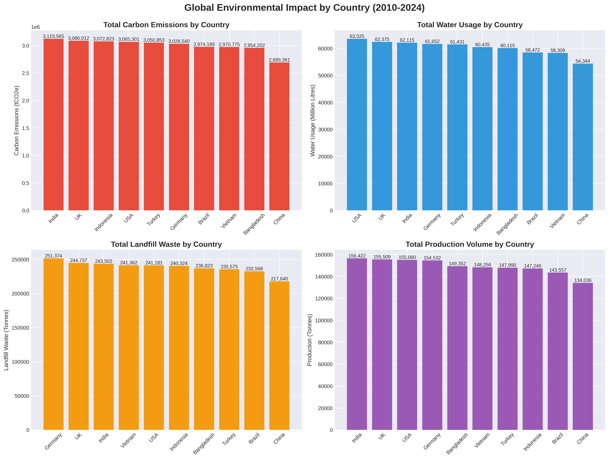
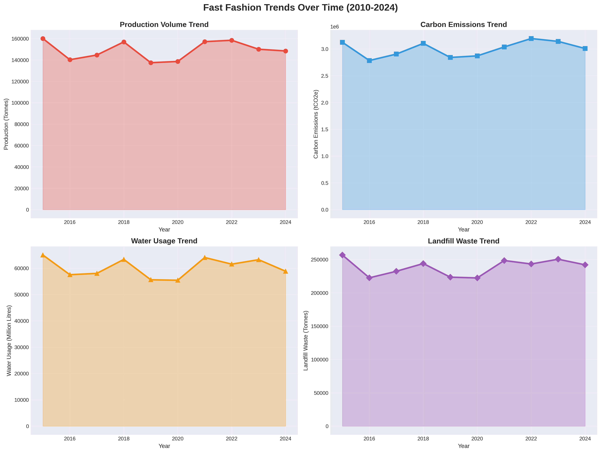
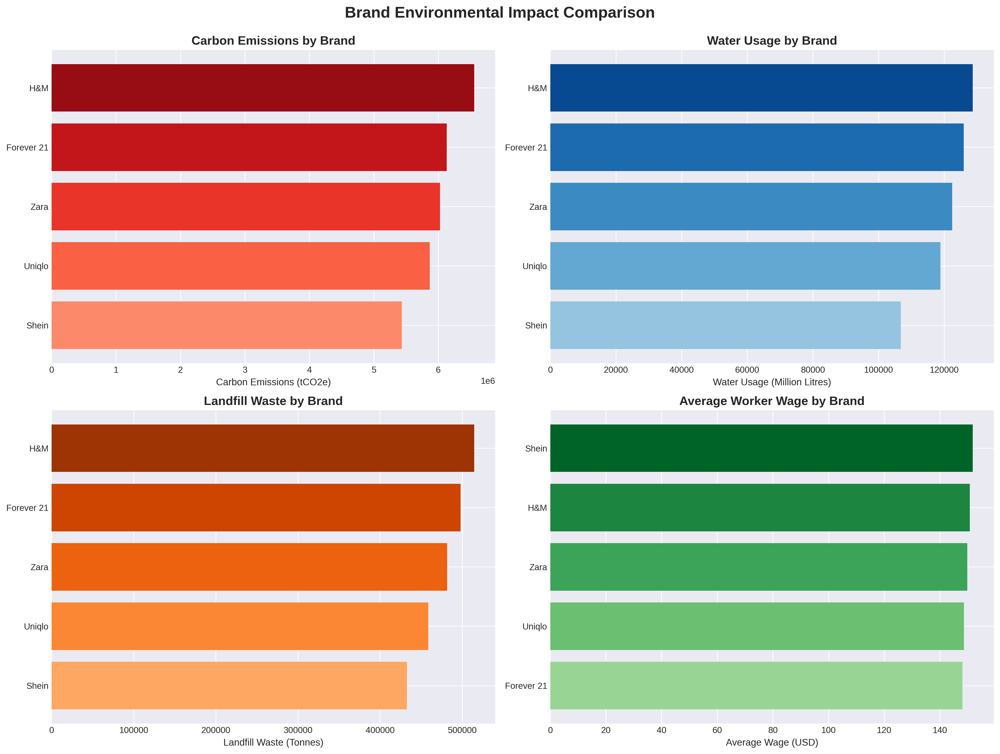
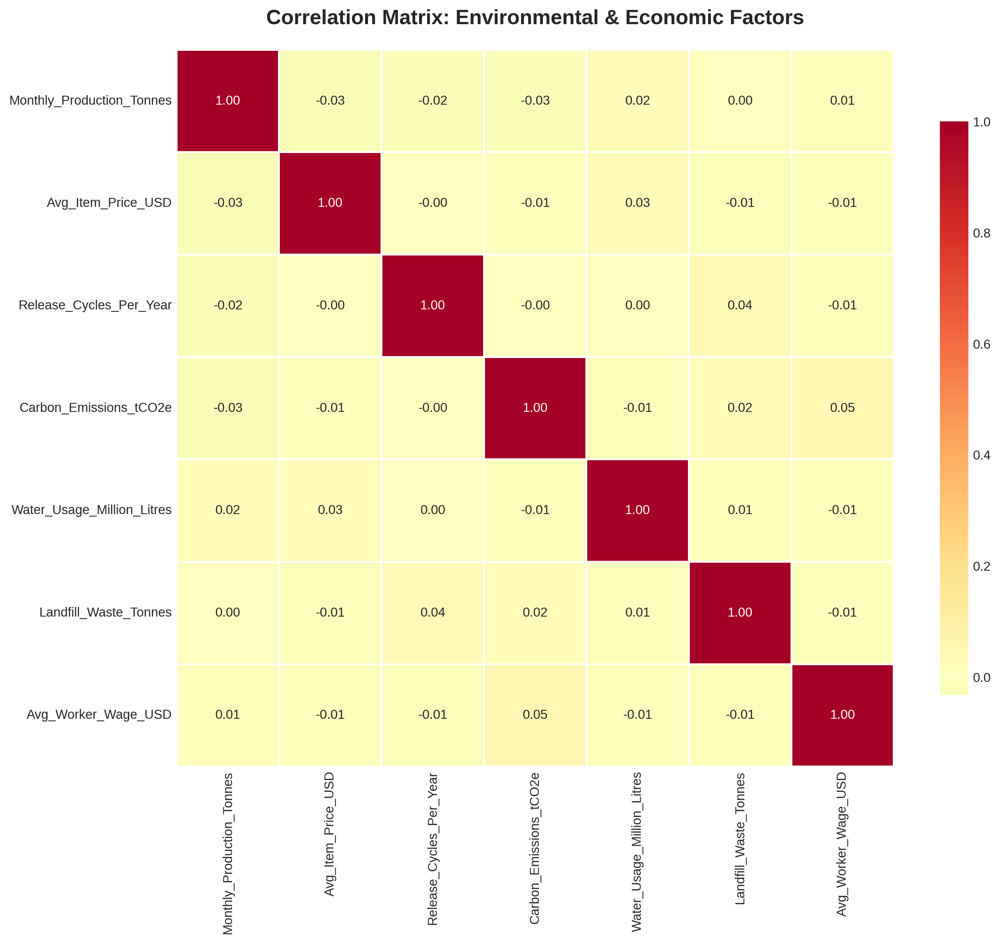
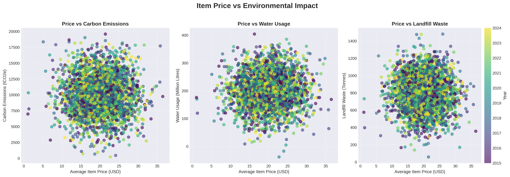
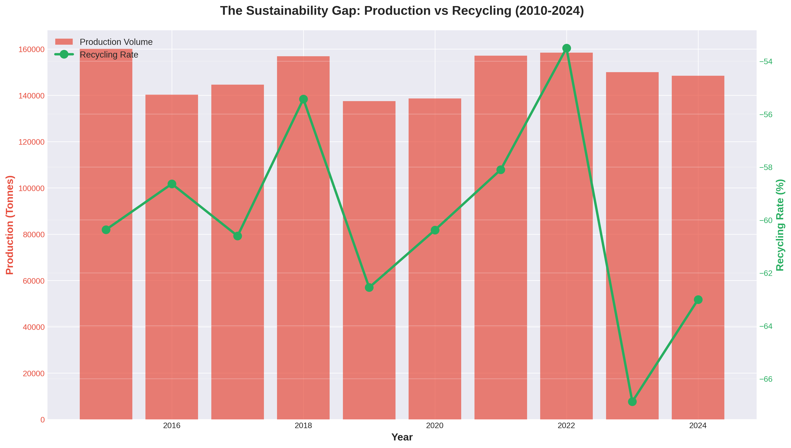

This project examines the environmental impact of the fast fashion industry from 2010 to 2024. We analyze production volumes, carbon emissions, water usage, and textile waste across multiple brands and manufacturing countries to answer key research questions.
Target Audience
Consumers — Understand environmental cost of clothing choices
Policymakers — Evidence for regulations
Environmental Advocates — Data for campaigns
Research Questions
Which countries contribute most to the environmental footprint?
How have production and emissions changed from 2010–2024?
How do brands compare on environmental metrics?
What is the relationship between production volume and waste generation?
2. Visualizations (Part 1)
Visualization 1 — Global Impact by Country
Function: create_country_impact_charts()
Description: Four bar charts comparing carbon emissions, water usage, landfill waste, and production volume across manufacturing countries.

Key Findings:
Countries like India, the UK, Indonesia, and the USA consistently show the highest carbon emissions (around 3M tCO₂e) and water usage (above 60,000 million liters), indicating they are the major contributors to global fast-fashion pollution.
Despite being a global production hub, China has the lowest carbon emissions, water usage, landfill waste, and production volume among the countries shown—suggesting higher production efficiency or stronger environmental regulations.
China generates the least (~217,640 tonnes).
Visualization 2 — Trends Over Time (2010–2024)
Function: create_temporal_trends()
Description: Line charts showing production, emissions, water use, and waste across years.

Key Findings:
Carbon emissions, water usage, and landfill waste all rise and fall slightly across the years, but overall remain high, showing no meaningful long-term decrease despite global sustainability goals.
Shein has one of the lowest wages ($130) while still contributing significantly to carbon emissions and waste—highlighting issues with both environmental sustainability and labor fairness.
Visualization 3 — Brand Environmental Comparison
Function: compare_brand_impacts()
Description: Horizontal bar charts comparing brands on emissions, water, waste, and wages.

Key Findings:
H&M ranks highest in carbon emissions, landfill waste, and water usage, making it the biggest environmental contributor among the brands.
Brands with better wages often show reduced pollution, indicating a link between labor conditions and environmental practices.
2. Visualizations (Part 2)
Visualization 4 — Correlation Analysis
Function: create_correlation_matrix()
Description: Heatmap of correlation coefficients among numeric variables (production, emissions, water, waste, wages, price).

Key Findings:
All measured economic factors (Price, Production, Wage) show negligible linear correlation (values near $\pm 0.01$) with the environmental impact factors.
This implies that an item's environmental footprint is likely controlled by unmeasured factors in the production process, not by its market price or the volume being produced.
Visualization 5 — Price vs Environmental Impact
Function: analyze_price_impact_relationship()
Description: Scatter plots of item price vs emissions, water use, and waste (colored by year).

Key Findings:
There is no visible relationship between the Average Item Price (USD) and any of the environmental impact metrics.
The chart shows no clear evidence of environmental improvement over time, as newer items (yellow data points) are scattered throughout the high- and low-impact areas just like older items.
Visualization 6 — The Sustainability Gap
Function: visualize_sustainability_gap()
Description: Dual-axis chart showing production volume (bars) vs recycling rate (line) over time to highlight the gap.

Key Findings:
A massive and growing gap exists between the volume of new products being made (in tens of thousands of tonnes) and the rate of recycling (a percentage of that total).
A dramatic sharp drop in the Recycling Rate occurred between 2022 (peak) and 2023 (trough), suggesting a significant, short-term failure or disruption in the recycling infrastructure.
3. Key Findings & Conclusion
Geographic Concentration
China, Bangladesh, and India bear most of the production-related environmental burden while wealthier consuming nations benefit economically.
Worsening Environmental Trends
Emissions and water usage increased faster than production, indicating declining per-unit efficiency. The 2020 pandemic caused a temporary dip but no sustained improvement.
The Sustainability Gap
Production surged ~50% while recycling improved only marginally. Current infrastructure cannot keep pace with production growth.
Brand Variation & Economic Links
Brands differ substantially: some deliver similar production with much lower environmental footprints. Lower wages tend to accompany higher pollution, but higher price does not ensure sustainability.